4 DNMADE 2ème année
4.1 Vocabulaire
| Français | English |
|---|---|
| flou | blurry |
| rugueux | rough |
| doux (au toucher) | smooth |
| brouillard | fog |
| brume | mist |
| la partie inférieure | the bottom part |
| la partie supérieure | the upper part |
| aborder (un sujet) | to tackle |
| à haute criminalité | crime-ridden |
| a ridge | une crête |
| atroce, ou criard | lurid |
| attendre de qn que… | to expect sb to |
| au premier plan | in the foreground |
| biaisé, partial | biassed |
| ce qui est produit, ce qui sort | the output |
| chaos | mayhem |
| comestible | edible |
| destinataire, récipiendaire | a recipient |
| diffuser | to broadcast |
| disposer, agencer | to lay out |
| durer | to last |
| échapper à | to elude |
| esquisser | to sketch |
| être condamné | to be doomed |
| être susceptible de | to be likely to |
| évident | obvious |
| exact, précis | accurate |
| faire 1m. de hauteur | to be 1m. high |
| faire 1m. de large | to be 1m. wide |
| faire 1m. de profondeur | to be 1m. deep |
| fournir (p…) | to provide sb with |
| fournir (s…) | to supply sb with |
| il semble que | it looks as if |
| une tache, une zone | a patch |
| incliner | to tilt |
| intenter un procès | to sue |
| interdire | to ban |
| la majorité écrasante | the overwhelming majority |
| la poitrine | the chest |
| la respiration, l’haleine | the breath |
| le confinement | the lockdown |
| le coucher du soleil | the sunset |
| le sein maternel | the bosom |
| menacer | to threaten |
| pendant que | while |
| posséder qqch | to own stg |
| postuler à qqch | to apply for stg |
| promouvoir (a…) | to advertise |
| promouvoir (p…) | to promote |
| provenir de | to stem from |
| résoudre | to work out |
| s’accroupir | to croush |
| selon, d’après | according to |
| se noyer | to drown |
| (se) terminer | to be over |
| sonder | to probe |
| un but, un objectif (a…) | an aim |
| un but, un objectif (p…) | a purpose |
| un contour | an outline |
| un écart (d…) | a discrepancy |
| un écart (g…) | a gap |
| une épave de bateau | a shipwreck |
| une légende d’image | a caption |
| une mission, une tâche | an assignment |
| une pièce de 10 ¢ | a dime |
| une pièce de 25 ¢ | a quarter |
| une pièce de 5 ¢ | a nickel |
| une tâche de couleur | a patch |
| une tempête | a storm |
| une toile | a canvas |
| une vague | a wave |
| une vue d’ensemble | an overview |
| un hommage | a tribute |
| un indice | a clue |
| un ordinateur de bureau | a desktop |
| un ordinateur portable | a laptop |
| un rédacteur en chef | an editor |
| un sondage | a poll |
| un stage | an internship |
| un traité (livre) | a treatise |
| vendre la mèche | to spill the beans |
| élargir | to widen |
| approfondir | to deepen |
| rehausser | to heighten |
| allonger | to lengthen |
| largeur | width |
| longueur | length |
| profondeur | depth |
| hauteur | height |
| riche, abondant, aisé | wealthy |
| concret | hands-on |
| un devoir | a duty |
| la sagesse | wisdom |
| être excité à l’idée de | to be hung up on… |
| l’état-providence | the welfare state |
| le noyau | the core |
| une revendication | a claim |
| recouper, inclure | to cut across |
| un festin | a feast |
| mêler à | to embroil |
| supporter, accepter | to bear |
| cinglant | searing |
| une hypothèse | an assumption |
| sans fard, simple et clair | bald |
| une tentative | an endeavour |
| lutter | to struggle |
| vaincre | to overcome |
| une limite, une frontière | a border |
| superficiel, peu profond | shallow |
| une énigme | a riddle |
| lugubre (b…) | bleak |
| lugubre (d…) | dismal |
| lugubre (g…) | gloomy |
| une polémique | a row (rime avec “now”) |
| avant | prior to |
| à l’aube de | on the eve of |
| une répétition (théâtrale) | a rehearsal |
| une foule | a crowd |
| un manque | a lack |
| une enquête officielle | an enquiry |
| cassant, fragile | brittle |
| somptueux | lavish |
| un incendie | a blaze |
| tenir compte de qqch (t…) | to take stg into account |
| tenir compte de qqch (a…) | to allow for stg |
| authentique | genuine |
| soulever un problème | to raise an issue |
| une usine | a factory |
| une locomotive à vapeur | a steam engine |
| un chemin, un sentier | a path |
| un produit, un bien de consommation | a good |
| dilapider | to squander |
| éviter | to avoid |
| dentelle | lace |
| clocher | steeple |
| confiance (en soi) | confidence |
| deviner | to guess |
| tenir debout“,”se tenir | to have legs |
| épineux, délicat | tricky |
| franchir une ligne | to cross a line |
| arrogant | overbearing |
| réaction, retour | feedback |
| une position | a stance |
| une personne facile à convaincre, crédule | a pushover |
| têtu | stubborn |
| amadouer | to schmooze |
| cahoteux, accidenté | bumpy |
| lisse, sans heurts | smooth |
| to tackle | to set about dealing with |
| un accord, une approbation | an approval |
| papeterie | stationery |
| finir par faire qqch | to wind up doing stg |
| véhiculer, transmettre | to convey |
| rappeler qqch à qn | to remind sb of stg |
| convaincre qn de dépenser plus | to upsell |
| attendre qqch de qn | to expect sb to do stg |
| un modèle | a template |
| une affiche | a billboard |
| audacieux | bold |
4.2 Définitions
| Français | English |
|---|---|
| a career | a profession for which one trains and which is undertaken as a permanent calling |
| a commune | a group of families or single people who live and work together sharing possessions and responsibilities |
| an output | something produced |
| a skill | a learned power of doing something competently |
| a treatise | a formal piece of writing that considers and examines a particular subject |
| lurid | causing horror or revulsion |
| to be doomed | to be condemned, to be certain to experience something terrible |
| to figure out | to discover |
| wit | astuteness of perception or apt humour |
| a one-off | limited to a single time, occasion, or instance |
| to epitomise | to embody |
| to commission | to appoint or assign to a task or function |
| a hook | something intended to attract and ensnare |
| to repurpose | to give a new use to |
| a tendril | a stem modified into a slender organ serving to attach a climbing plant to its support |
| tuition fees | the price of or payment for instruction |
| to plaster | to affix to or place on especially conspicuously or in quantity |
| to dispel | to cause to disappear |
| to elude | to escape the perception, understanding, or grasp of |
| a recipient | one that receives |
| an aim | a clearly directed intent or purpose |
| a purpose | something set up as an object or end to be attained |
| to stem from | to be caused by, to come from |
| an overview | a general survey, a summary |
| an assignment | a specified task or amount of work given by authority |
| to work out | to solve (something, such as a problem) by a process of reasoning or calculation |
| to sketch | to make a rough draft, or outline of |
| accurate | free from error especially as the result of care |
| to sue | to seek justice or right from (a person) by legal process |
| to drop | to cease to be of concern |
| to sell like hot cakes | to sell at a rapid rate |
| to crouch | to lower the body stance especially by bending the legs |
| edible | something that is suitable or safe to eat |
| to threaten | to express an intention to inflict evil, injury, or damage |
| according to | in conformity with, as stated by |
| to come through | to be expressed or communicated |
| a clue | a piece of evidence that leads one toward the solution of a problem |
| prominence | something widely and popularly known |
| a backdrop | a painted cloth hung across the rear of a stage |
| to rail | to revile or scold in harsh, insolent, or abusive language |
| wealthy | very affluent, characterized by abundance |
| a parable | a usually short fictitious story that illustrates a moral attitude or a religious principle |
| a duty | obligatory tasks, conduct, service, or functions that arise from one’s position |
| wisdom | accumulated philosophical or scientific learning |
| to be hung up (on stg) | having great or excessive interest in or preoccupation with someone or something |
| a claim | a demand for something due or believed to be due |
| to cut across | to include within the scope of effect or significance |
| to embroil | to involve in conflict or difficulties |
| pervasive | existing in or spreading through every part of something |
| squalor | a state of being marked by filthiness and degradation from neglect or poverty |
| bald | basic and with no unnecessary words or detail |
| to endeavour | to attempt |
| to outlaw | to make illegal |
| hideous | offensive to the senses and especially to sight |
| to rail against sb | to revile or scold in harsh, insolent, or abusive language |
| a row | a noisy argument or fight |
| a slum | a very poor and crowded area, especially of a city |
| to imbue | to fill something or someone with a quality or feeling |
| an outbreak | a sudden beginning |
| a foreman | the supervisor or leader of a group |
| skewed | not accurate or exact |
| scrutiny | careful, detailed examination or inspection |
| to account for something | to explain or to be the reason for |
| refurbishment | the process of improving a building or store by cleaning and decorating it, adding new furniture, equipment, etc. |
| to pillory | to severely criticize someone, especially in a public way |
| to urge sb to do stg | |
| buttoned-up | coldly reserved or standoffish |
| to overshadow | to cause someone or something to seem less important or noticeable |
| an outlook | a view from a particular place, a prospect in the future |
| to taint | to spoil something or give it an unpleasant quality |
| to plague | to cause worry, pain, or difficulty to someone or something over a period of time |
| to claim | to say that something is true or is a fact, although you cannot prove it and other people might not believe it |
| to shelter | to protect yourself, or another person or thing, from bad weather, danger, or attack |
| to pour | to make a substance flow from a container |
| a dweller | a person who lives in a city, town, cave, etc. |
| a row | a line of things, people, animals, etc. arranged next to each other |
| to unsettle | to make someone feel anxious or slightly worried |
| handicraft | a skilled activity in which something is made in a traditional way with the hands rather than being produced by machines in a factory |
| a seat | a place that acts as a base or centre for an important activity |
| falsehood | a lie or a statement that is not correct |
| a bed | the bottom of something, or something that serves as a base |
| to squander | to waste money or supplies, or to waste opportunities by not using them to your advantage |
| tracery | architectural ornamental work with branching lines |
| filigree | delicate jewellery made from twisted wire |
| lacework | objects or patterns consisting of or resembling lace |
| picturesque | attractive in appearance, especially in an old-fashioned way |
| to beat to the punch | to do or achieve something before someone else is able to |
| beforehand | in anticipation, in advance |
| a pain point | a persistent or recurring problem (as with a product or service) that frequently inconveniences or annoys customers |
| to poke holes in stg | to find mistakes or problems in a plan or in what someone has said |
| a takeaway | a conclusion to be made based on presented facts or information |
| to tweak stg | to make usually small adjustments in or to stg |
| momentum | strength or force gained by motion or by a series of events |
| a journey | an act or instance of traveling from one place to another |
| to come easy | to be easy to achieve or accomplish |
| to buzz | to make a low continuous humming sound like that of a bee |
| a step | an action, proceeding, or measure often occurring as one in a series |
| to walk through | to guide (someone, such as a novice) through an unfamiliar or complex procedure step-by-step |
| to pitch | to present or advertise |
| stellar | outstanding, exceptional |
| to push over the edge | o cause one to commit to doing something they had been considering or close to doing for a long time. |
| a buy-in | acceptance of and willingness to actively support and participate in something |
| a daydream | a pleasant visionary usually wishful creation of the imagination |
| amazeballs | extremely surprising or good: |
| the layout | the way that something is arranged |
| a head start | an advantage that someone has over other people in something such as a competition or race |
| hefty | quite heavy |
| a brand | a public image, reputation, or identity conceived of as something to be marketed or promoted |
| main | chief, principal |
| to drive | to give shape or impulse to |
| stunning | strikingly impressive especially in beauty or excellence |
| a mock-up | a full-sized structural model built to scale chiefly for study, testing, or display |
| to upsell | to try to convince (a customer) to purchase something additional or at a higher cost |
| to flesh out | to provide more information about something, to make something more complete by adding details |
| to draw out | to remove, to extract |
| to cleanse | to rid of impurities by or as if by washing |
| signage | all the signs that advertise a product or company |
| closure | an often comforting or satisfying sense of finality |
| hip | very fashionable, trendy |
| premium | a high value or a value in excess of that normally or usually expected |
| to wrap up | to summarize, to bring to a usually successful conclusion |
4.3 Traductions
| Français | English |
|---|---|
| Sur quoi Milton Glaser a-t-il dessiné le logo ? | What did he draw the logo on? |
| Il l’a dessiné sur une enveloppe. | He drew it on an envelope. |
| L’enveloppe sur laquelle il a dessiné le logo est exposée au MoMA. | The envelope he drew the logo on is exhibited / displayed in MoMA. |
| L’homme qui a créé le logo est mort en juillet. | The man who designed the logo died in July. |
| Pour comprendre le logo, il faut résoudre une petite énigme. | You need to crack / solve a little riddle to understand the logo. |
| Si Milton Glaser n’avait pas inventé le logo de New-York, il ne serait pas mondialement connu. | If Milton Glaser hadn’t designed the NYC logo, he would not be world-wide famous. |
| Le monde serait-il meilleur si les publicités ne mentaient pas ? | Would the world be a better place if adverts didn’t lie? |
| Milton Glaser conseille aux jeunes artistes de beaucoup travailler. | Milton Glaser advises young artists to work a lot. |
| Il aurait pu être un peu plus optimiste. | He could have been a bit more optimistic. |
| Il se peut qu’il ait été pessimiste… | He may have been pessimistic. |
| Mais j’aurais quand même dû l’écouter ! | Still, I should have listened to him! |
| Il est temps que tu ailles au lit. | It is time you went to bed. |
| Je préfèrerais que tu lui parles tout de suite. | I’d rather you talked to him right now. |
| Je regrette que tu ne lui aies pas parlé plus tôt. | I wish you had spoken to him earlier. |
| La toile fait 1,22m. de large. | The canvas is 1.22m wide. |
| Elle est exposée au musée des Beaux Arts de Boston. | It is displayed in the museum of Fine Arts in Boston |
| Il se peut qu’elle ait été peinte au XIXè siècle. | It may have been painted in the 19th century. |
| Je regrette de ne pas avoir vu ce tableau | I wish I had seen this painting. |
| Le cours de la semaine dernière a duré 3 heures, ce qui était beaucoup trop long. | Last week’s lesson lasted 3 hours, which was way too long. |
| Ce que j’ai trouvé un peu exagéré, ce sont les poissons et les mouettes au premier plan. | What I found a bit exaggerated were the seagulls and fish in the foreground. |
| Ce tableau, que Ruskin a si bien décrit, est en fait très politique. | This painting, which Ruskin described so well, is actually very political. |
| Si Ruskin n’avait pas écrit sur Turner, celui-ci ne serait pas célèbre aujourd’hui | Turner wouldn’t be famous today had Ruskin not written about him, |
| Pugin a peut-être poussé Ruskin à écrire | Pugin may have led Ruskin to take to writing. |
| On peut dire de lui qu’il a été un véritable visionnaire | He can be said to have been a true visionary. |
| On devrait tenir compte de la pensée victorienne dans nos opinions | Victorian thought should be allowed for in our opinions. |
| Peu de gens connaissent Pugin, à la différence de Turner dont les oeuvres sont mondialement connues | Few people know Pugin, unlike Turner, whose works are famous world-wide. |
| Pourtant il a conçu l’un des bâtiments anglais les plus connus. | He designed one of the most famous English landmarks, though. |
| L’image du haut est plus détaillée que celle du bas | The top picture features more details than the bottom one. |
| Les maisons georgiennes semblent lugubres tandis qu’on a envie de rentrer dans cette auberge néo-gothique | Georgian houses look bleak whereas you really want to step inside this neo-Gothic inn. |
| The crowd began to trickle back home. | La foule se mit à rentrer au compte-gouttes |
| They were rubbing their eyes, which even in the gloom could be seen to be red-rimmed | Ils se frottaient les yeux, dont on pouvait discerner les bords rougis dans l’obscurité |
| La foule au premier plan est à peine visible | The crowd in the foreground can hardly be seen. |
| Cette huile-sur-toile est exposée au musée de Philadelphie | This oil-on-canvas is displayed at the Philadelphia Museum of Art. |
| Turner a passé des heures à retravailler le tableau avant de le montrer. | Turner spent hours reworking the painting before exhibiting it. |
| On pensait que ces esquisses montraient l’incendie du Parlement. | NA |
| Avec qui travailles-tu sur le logo du cours ? | Who are you working on the logo with? |
| On dit de nos nouveaux clients qu’ils n’aiment pas gaspiller de l’argent | Our new customers are said not to like squandering money. |
| J’ai vraiment hâte de présenter notre projet | I’m really hung up on pitching our project. |
| Je regrette de ne pas avoir tenu compte des problèmes soulevés par le client | I wish I had taken into account the issues raised by the customer. |
4.4 Flashcards
| Images | Expressions |
|---|---|
| a backdrop | |
| a billboard | |
| a bow window | |
| a bumpy road | |
| 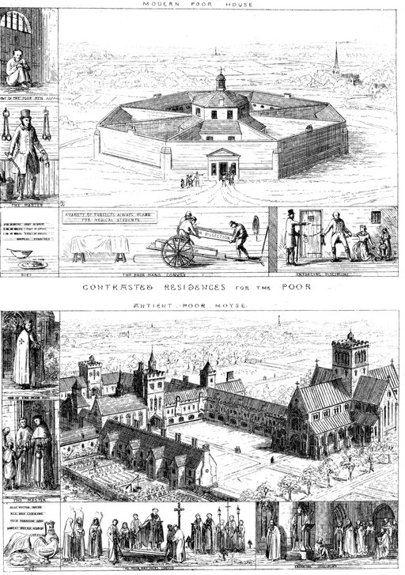 | a contrast by Pugin |
| 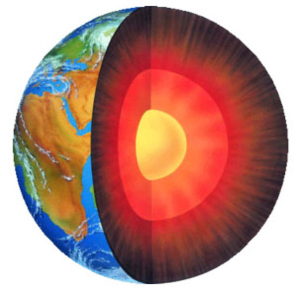 | a core |
| a drum | |
| 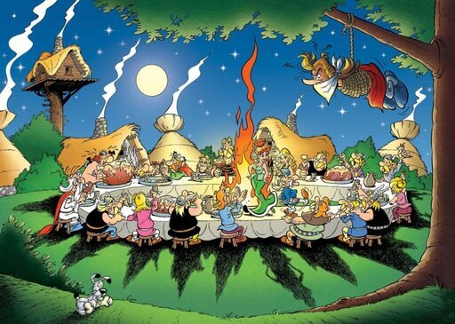 | a feast |
| a hill | |
| a palate cleanser | |

|
a path |
| 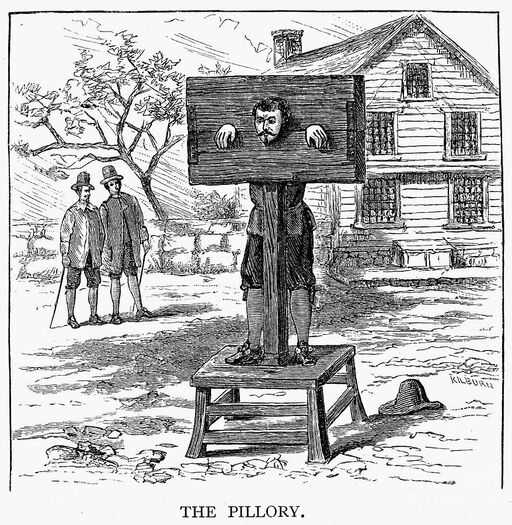 | a pillory |
| a ridge | |
| a sales pitch | |
| a scythe | |
| a shipwreck | |

|
a slide show |

|
a split background |
| a steam engine | |
| a steeple | |
| a storm | |
| 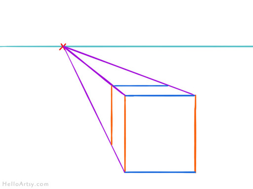 | a vanishing point |
| 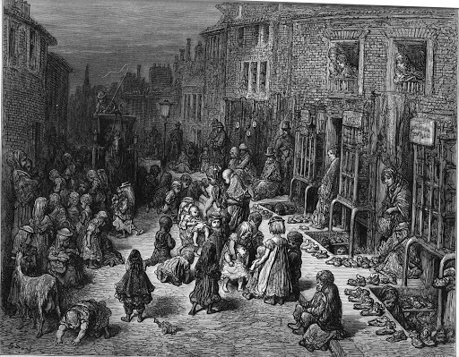 | a Victorian slum |
| a victory flag | |
| a warehouse | |
| a wave | |

|
a wax seal |
| a windy road | |
| an iron railing | |
| 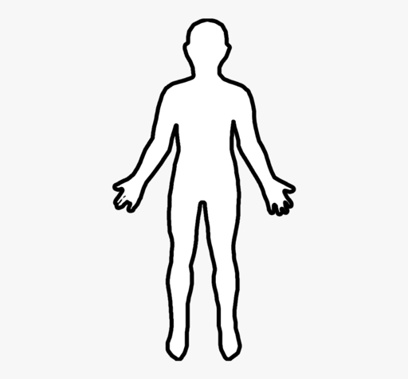 | an outline |
| 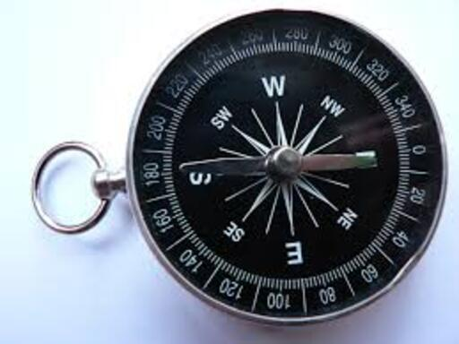 | compass |
| 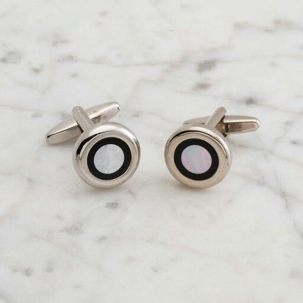 | cufflinks |
| filigree | |
| foot steps | |

|
gold foil |
| lace | |

|
mockup designs |
| neo gothic architecture | |
| scaffolding | |
| shackles | |
| skyline | |
| sparks | |

|
stained glass window |
| stucco neoclassical front | |
| 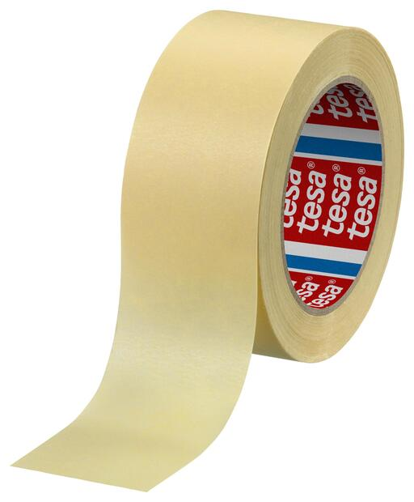 | tape |
| the brain | |
| the chest | |
| the edge of a cliff | |
| the kernel | |
| 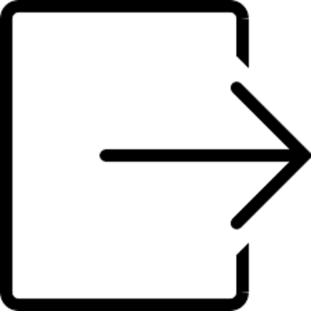 | the output |
| 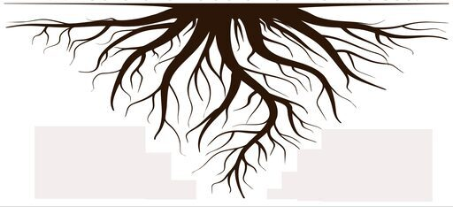 | the root |
| the swell | |
| the Tom Tower in Oxford | |
| 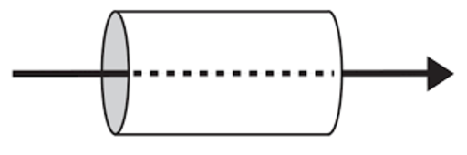 | through |
| to be blindfolded | |
| to drown | |
| to poke | |
| 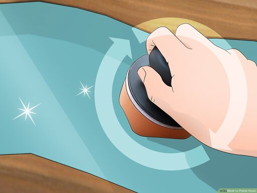 | to polish |
| 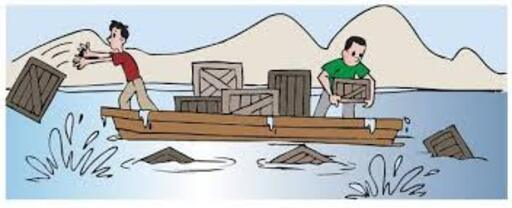 | to throw overboard |
| tracery | |
| 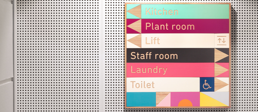 | wayfinding design |
| widening a road |
4.5 Pronunciation
| Images | Expressions |
|---|---|
| about | |
| accurate | |
| aesthetic | |
| appreciative | |
| architecture | |
| bald | |
| border | |
| bosom | |
| breath | |
| budgetary | |
| canvas | |
| carnage | |
| cheap | |
| colony | |
| commune | |
| contribute | |
| country | |
| critic | |
| criticism | |
| crouch | |
| crowd | |
| cruel | |
| domain | |
| drown | |
| echo | |
| elude | |
| endeavor | |
| enquiry | |
| era | |
| event | |
| eventually | |
| factory | |
| falsehood | |
| fantasy | |
| figure | |
| fundamental | |
| furniture | |
| general | |
| generic | |
| hideous | |
| hierarchy | |
| history | |
| identity | |
| kernel | |
| lavish | |
| lurid | |
| manufacture | |
| marriage | |
| mayor | |
| measure | |
| medieval | |
| metaphor | |
| natural | |
| nature | |
| nuance | |
| opinion | |
| outlaw | |
| parable | |
| parallel | |
| parliament | |
| pervasive | |
| plague | |
| pour | |
| professional | |
| proposal | |
| purpose | |
| reason | |
| rehearsal | |
| rhythm | |
| rough | |
| scrutiny | |
| sear | |
| sheet | |
| shelter | |
| skew | |
| slavery | |
| structure | |
| table | |
| theme | |
| thick | |
| thought | |
| through | |
| treatise | |
| typical | |
| virtue | |
| volume | |
| warehouse | |
| widen |